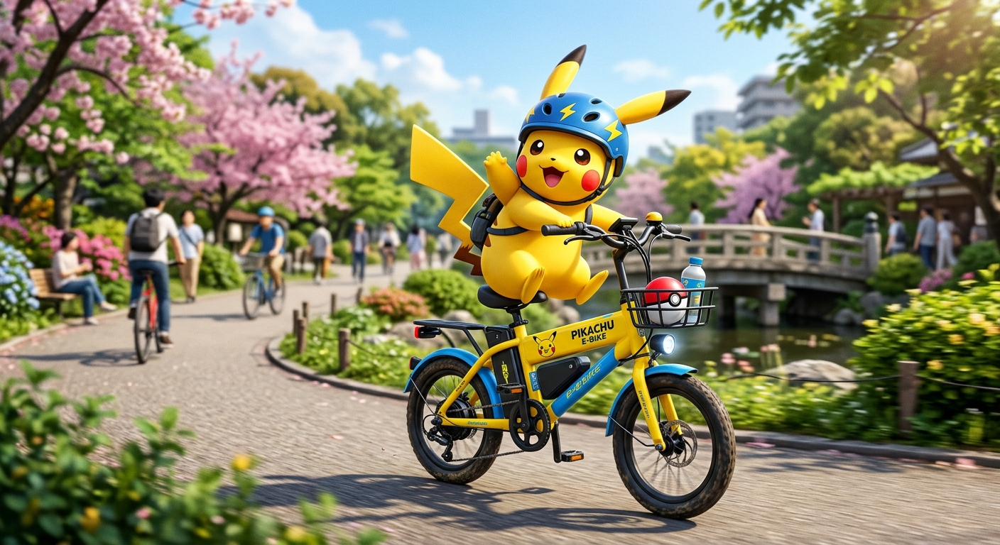

Bicicletas Electricas

Bicicleta de Montaña

Bienvenidos a Bike World, una tienda especializada en la venta, reparación y mantenimiento de bicicletas. Nuestro objetivo es ofrecer productos de excelente calidad para todas las personas que disfrutan del ciclismo, desde principiantes hasta ciclistas profesionales. Contamos con una gran variedad de bicicletas de montaña, de ruta y urbanas, además de accesorios como cascos, guantes, luces, candados y repuestos. También ofrecemos servicios de reparación y mantenimiento para garantizar que cada bicicleta funcione de manera segura y eficiente. En Bike World nos destacamos por brindar una atención amable, precios competitivos y asesoría personalizada para ayudar a nuestros clientes a encontrar la bicicleta ideal según sus necesidades. ¡Ven y descubre la libertad de pedalear con nosotros! En Bike World, cada camino es una nueva aventura.
"un equipo apasionado que te hace la vida más fácil."
"Lo que necesitas, listo para usar cuando lo necesites."
"Más fácil de lo que crees: pasos y listo."
"Pásanos a ver o mándanos un mensaje, te esperamos."
